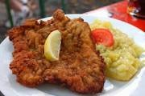

Weiner Schnitzel

Description
Weiner Schnitzel is a popular European dish with ties to Germany and Austria.
It is typically made with pork and it is coated with breadcrumbs before being fried.
This dish is typically served with a lemon garnish and french fries.
Ingredients
- 2 pounds veil
- 1 cup all-purpose flour
- 4 eggs
- 1 tablespoon vegetable oil
- salt and pepper to taste
- 2 cups of bread crumbs
- 1/8 cup of oil for frying
Directions
- Cut the veal into steaks, about as thick as your finger. Dredge in flour.
In a shallow dish, beat the eggs with 1 tablespoon oil, salt and pepper.
Coat the veal with egg mixture, then with bread crumbs.
- Heat 1/4 cup oil in a heavy skillet over medium heat.
Fry veal until golden brown, about 5 minutes on each side.
Back to Main Page